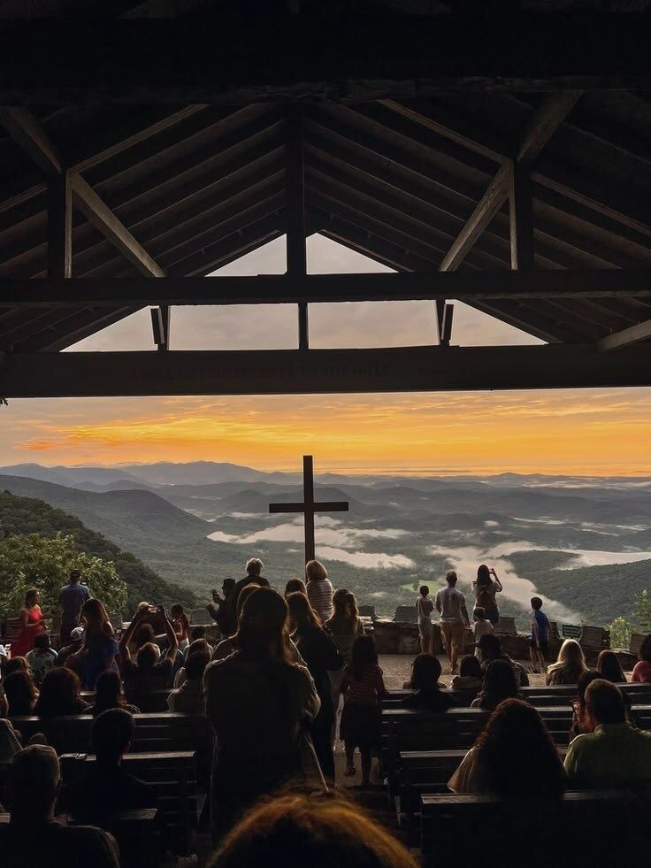
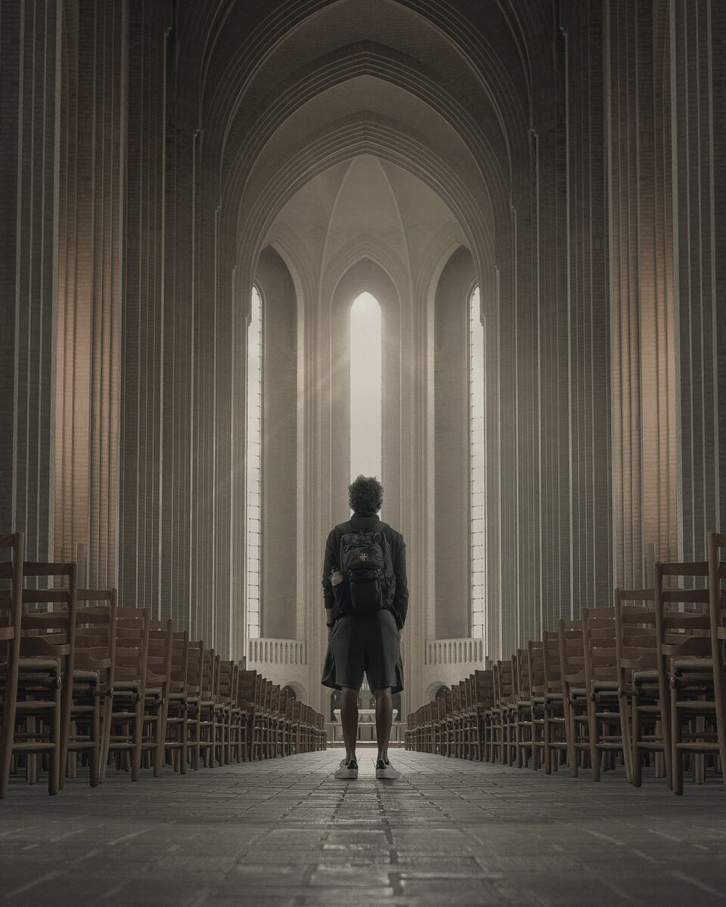

MyChurch started with a familiar problem: church directories are outdated, websites are inconsistent, and there's no way to get a feel for a place before showing up on a Sunday morning.
The goal was to give every church one clear, honest profile, and give visitors one simple place to explore them all before they ever walk through the door.
MyChurch is built around a design direction inspired by the moment of standing at an unfamiliar door: a deep navy and warm ivory palette, a muted-gold accent, and a pairing of Cormorant Garamond for headings with Inter for body text, with a light/dark theme toggle.
Rather than using stock photography, I wrote a small generative art system that draws a unique, seeded landscape for every church, so each profile gets its own stable image without relying on external assets.
Building MyChurch gave me practical experience designing and structuring a multi-page content platform, from directory search through to a user dashboard.
Browse the live prototype, or get in touch for the source.